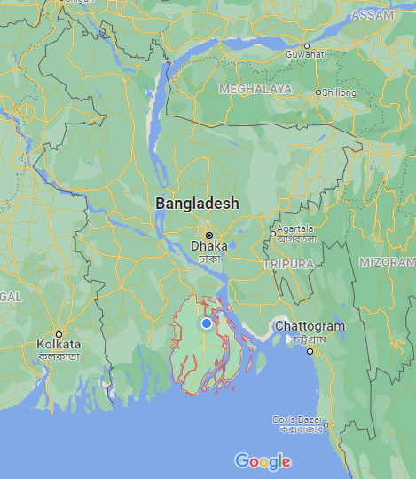

বরিশাল/BARISAL
বরিশাল বাংলাদেশের দক্ষিণাঞ্চলের একটি প্রধান শহর । দেশের খাদ্যশস্য উৎপাদনের একটি মূল উৎস এই বৃহত্তর বরিশাল।
বরিশালে একটি নদীবন্দর রয়েছে যেটি দেশের অন্যতম প্রাচীন, দ্বিতীয় বৃহত্তম ও গুরুত্বপূর্ণ একটি নদীবন্দর।

নামকরণের ইতিহাস
বরিশাল নামকরণ সম্পর্কে বিভিন্ন মতভেদ রয়েছে। এক কিংবদন্তি থেকে জানা যায় যে, পূর্বে এখানে খুব বড় বড় শাল
গাছ জন্মাতো, আর এই বড় শাল গাছের কারণে (বড়+শাল) বরিশাল নামের উৎপত্তি। খাল বিল জলাভূমিতে ভরা
বরিশালে যাতায়াতের অসুবিধাকে মাথায় রেখে চালু হয়েছে কথা আইতে শাল যাইতে শাল, তার নাম বরিশাল।
কেউ কেউ দাবি করেন, পর্তুগীজ বেরি ও শেলির প্রেমকাহিনীর জন্য বরিশাল নামকরণ করা হয়েছে।
অন্য এক কিংবদন্তি থেকে জানা যায় যে, গিরদে বন্দরে (গ্রেট বন্দর) ঢাকার নবাবদের বড় বড় লবণের গোলা ও চৌকি ছিল।
ইংরেজ ও পর্তুগীজ বণিকরা বড় বড় লবণের চৌকিকে 'বরিসল্ট' বলতো। অথাৎ বরি (বড়)+ সল্ট(লবণ)= বরিসল্ট।
আবার অনেকের ধারণা এখানকার লবণের দানাগুলো বড় বড় ছিল বলে 'বরিসল্ট' বলা হতো । পরবর্তিতে বরিসল্ট
শব্দটি পরিবর্তিত হয়ে বরিশাল নামে পরিচিতি লাভ করে।
ইতিহাস ও ঐতিহ্য
বরিশাল বাংলাদেশের দক্ষিণাঞ্চলের একটি প্রধান শহর। এটি বরিশাল বিভাগের অন্তর্গত ও একই সাথে জেলা ও বিভাগীয়
সদর দপ্তর। কীর্তনখোলা নদীর তীরে মোগল আমলে স্থাপিত লবণচৌকি গিরদে বন্দর কে কেন্দ্র করে এ শহর গড়ে ওঠে
ও ১৮০১ সালে বরিশালে তৎকালীন বাকেরগঞ্জ জেলার সদর দপ্তর স্থাপিত হলে, শহর হিসেবে এর ব্যাপক গুরুত্ব বাড়ে।
দেশের খাদ্যশস্য উৎপাদনের একটি মূল উৎস এই বৃহত্তর বরিশাল। বরিশালে একটি নদীবন্দর রয়েছে যেটি দেশের
অন্যতম প্রাচীন, দ্বিতীয় বৃহত্তম ও গুরুত্বপূর্ণ একটি নদীবন্দর।